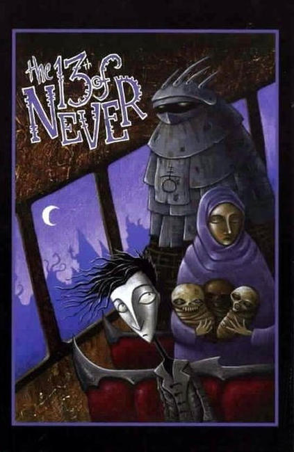

Slave Labor Graphics (SLG) is an independent American comic book publisher, well known for publishing darkly humorous, offbeat comics. Creators associated with SLG over the years include Evan Dorkin, Roman Dirge, Sarah Dyer, Woodrow Phoenix, Jhonen Vasquez, and Andi Watson. Slave Labor Graphics was started in 1986 by Dan Vado, who remains the company's president and publisher.
The first book Slave Labor Graphics published was ShadowStar #3, a female superhero character previously published independently by some of Vado's friends. Slave Labor Graphics's first major success was Samurai Penguin #1 by Dan and Mark Buck, which sold 58,000 copies in the summer of 1986. The first few titles, such as Hero Sandwich and It's Science With Dr. Radium, were all created by friends of Vado's from high school. Other successes were Milk & Cheese, a comic about mean-spirited anthropomorphic dairy products by Evan Dorkin, and Johnny the Homicidal Maniac, a comic about the adventures of a serial killer by Jhonen Vasquez.
In this time period, comic book speculation was rampant, so Slave Labor Graphics was able to sell its entire print run of many titles. However, at the end of the mid-1990s speculation bubble, some distributors went out of business without paying Slave Labor Graphics.
In 1995, Slave Labor Graphics added a more genre-oriented imprint called "Amaze Ink" intended to be for all audiences; the "stranger, more adult, and more difficult to categorize material" would still be published under the main "Slave Labor" imprint.
In 2005, Slave Labor Graphics entered into a partnership with The Walt Disney Company to produce comic book series based on some of its properties: Haunted Mansion, Wonderland, Tron, and Gargoyles. Its own creations, such as Little Gloomy (1999–2005), Kid Gravity (2003–2007), and The Super Scary Monster Show: Featuring Little Gloomy (2005–2007), appeared regularly in Disney Adventures magazine.
In September 2008, SLG remodeled its lobby to be a smaller gallery/shop which opened as Boutiki in San Jose in December 2008. The gallery/shop is still operating (with name of Art Boutiki) as of 2014 December. In late 2010, Slave Labor Graphics established an independent record label entitled Slab Yard Sound Company. In January 2012, editor-in-chief Jennifer de Guzman, who had been with the company since 2001, left to become the PR and Marketing Director at Image Comics.
Titles
The 13th of Never (2004)
15 Minutes (2004)
A Friendly Game (2010)
Abel (1998)
Absent Friends (2004)
Action Girl Comics (1994)
Agnes Quill An Anthology of Mystery (2006)
Arianne (1991)
Attitude Lad (1994)
Autumn (2004)
Awkward (1999)
Awkward Universe (1995)
Axis Mundi (1996)
The B. A. C.: Bad Art Collection (1996)
The Babysitter (2008)
A Bag of Anteaters (2005)
Barabbas (1986)
Bear (2003)
Bear: Demons (2006)
Bear: Immortal (2004)
Beautiful People (1994)
Beelzelvis (1994)
Beer and Roaming in Las Vegas (1995)
Biff Bam Pow! (2007)
Bill & Ted's Most Excellent Adventures (2004)
Bill the Clown (1992)
Bill the Clown: Comedy Isn't Pretty (1992)
Bill the Clown: Death & Clown White (1993)
Black Heart Billy (2000)
Bleat (1995)
Blood & Water (1991)
Bloodlust (1990)
Bluebeard (1993)
BomBaby the Screen Goddess (2003)
Breakneck Blvd. (1995)
Bummer Trilogy (2001)
Byron: Mad, Bad, and Dangerous (2007)
Caffeine (1996)
Cambion (1995)
Camping with Bigfoot (1995)
Captain Blood: Odyssey (2009)
Captain Dingleberry (1998)
Captain Dingleberry Sooper Spooky Goth Special (2000)
Cat with a Really Big Head (2002)
Cemeterians (2006)
Charm School: Magical Witch Girl Bunny (2000)
Charm School: Vampire Dragster Dean (2000)
Chi (2003)
Chimney25 (2003)
Chumble Spuzz (2008)
Circling the Drain (2003)
City (2003)
Cocopiazo (2004)
Comical Tragedy of Punch and Judy (2002)
Contraband (2008)
Copybook Tales (1996)
Corporate Ninja 2005
Crime Clinic 1995
Cylinderhead 1989
Dance Party DOA 1993
Dead Air 1989
Dead Eyes Open 2005
Definition 1997
Detroit! Murder City Comix 1994
Dick Wad of the Mega-Vice Squad 1993
Dim-Witted Darryl 1998
Doris Danger Giant Monster Adventures 2009
Dork 1993
Dr. Grave 2000
Dr. Radium and the Gizmos of Boola Boola! 1992
Dr. Radium Battles Phill, King of the Pill Bugs! 2004
Dr. Radium's Big Book! 1990
Dr. Radium, Man of Science 1992
Dracula: Return of the Impaler 1993
Dragon Knights 1998
Dreadstar 2000
Dream Maiden Megan 2008
Due 2005
Dystopik Snoman: The Kolektiv Unkonsciousness 1994
Dystopik Snomen 1995
Egg Story 2004
Elmer 2010
Emily and the Intergalactic Lemonade Stand (2004)
Emo Boy (2005)
Empty Love Stories (1994)
Evenfall (2003)
Everwinds (1997)
Everything Can Be Beaten (2002)
Farewell, Georgia (2003)
Fat Chunk (2008)
Filler Bunny (1998)
Fishmasters (1994)
Food Chain Follies 1991
Frontier 1994
Frozen Embryo 1992
Fun with Milk and Cheese 1994
Futurama 1989 3 issues (3 indexed) Gallery April 1989 - August 1989
Gakk, Choke, Blurg!: It's Science with Dr. Radium 1994 1 issues (0 indexed) Gallery 1994
Gargoyles 2006 8 issues (3 indexed) Gallery June 2006 - March 2008
Gargoyles: Bad Guys 2007 4 issues (2 indexed) Gallery November 2007 - August 2008
Gargoyles: Clan Building 2007 2 issues (0 indexed) Gallery 2007 - 2009
Ghost Ship 1996 3 issues (2 indexed) Gallery March 1996 - October 1996
The Ghouly Boys 2004 2 issues (0 indexed) Gallery 2004 - 2004
GloomCookie 1999 28 issues (4 indexed) Gallery 1999 - ?
GloomCookie Presents: A Monster's Christmas 2002 1 issues (0 indexed) Gallery 2002
Gordon Yamamoto and the King of the Geeks 2004 1 issues (0 indexed) Have 1 (Need 1) 2004
Graphique Musique 1989 3 issues (3 indexed) Have 3 (Need 1) December 1989 - May 1990
Griffin 1988 3 issues (0 indexed) Gallery July 1988 - April 1989
Hairbat 1995 1 issues (1 indexed) Gallery July 1995
Halo and Sprocket 2002 4 issues (4 indexed) Gallery April 2002 - June 2003
Harry the Cop 1992 1 issues (1 indexed) Gallery April 1992
Haunted Mansion 2005 7 issues (0 indexed) Gallery October 2005 - 2007
Hearts of Africa 1994 1 issues (0 indexed) Gallery 1994
Hearts of Africa: Trials 1996 1 issues (0 indexed) Gallery 1996
Hectic Planet 1993 2 issues (2 indexed) Have 1 (Need 1) September 1996 - 1993
Helyun 1990 1 issues (0 indexed) Gallery 1990
Helyun: Bones of the Backwoods 1991 1 issues (0 indexed) Gallery 1991
Hero Sandwich 1987 9 issues (6 indexed) Gallery February 1987 - May 1992
Hero Sandwich: Nobody Lives Forever 1989 1 issues (0 indexed) Gallery 1989
Highway 13 2001 10 issues (3 indexed) Gallery January 2001 - 2003
Holy Avenger 1996 1 issues (0 indexed) Gallery 1996
Horse 1989 1 issues (0 indexed) Gallery 1989
Hosie's Heroines 1993 1 issues (1 indexed) Gallery April 1993
Hot Works: The Best of One-Fisted Tales 1993 1 issues (0 indexed) Gallery 1993
Hsu and Chan 2003 8 issues (0 indexed) Gallery 2003 - 2009
Hsu and Chan: Too Much Adventure 2004 1 issues (0 indexed) Gallery 2004
Hummingbird 1996 1 issues (1 indexed) Gallery June 1996
I Don't Love You!: The Best of Migraine Boy 2004 1 issues (0 indexed) Gallery 2004
I Feel Sick 1999 2 issues (2 indexed) Gallery August 1999 - May 2001
Iliad 1997 2 issues (0 indexed) Gallery 1997 - 1998
Imp 1994 1 issues (0 indexed) Gallery 1994
It's Science With Dr. Radium 1986 7 issues (7 indexed) Gallery September 1986 - March 1988
It's Science with Dr. Radium Special 1989 1 issues (1 indexed) Gallery 1989
Jam 1989 5 issues (5 indexed) Gallery November 1989 - 1991
Java Town 1992 6 issues (6 indexed) Gallery May 1992 - June 1996
Jazzbo!: Comics That Swing 1994 2 issues (2 indexed) Gallery November 1994 - April 1995
Jellyfist 2007 1 issues (0 indexed) Gallery 2007
Jet Comics 1997 3 issues (0 indexed) Gallery December 1997 - May 1998
Johnny, the Homicidal Maniac 1995 7 issues (6 indexed) Have 8 (Need 3) August 1995 - January 1997
JTHM: The Director's Cut 1997 1 issues (0 indexed) Have 2 (Need 1) 1997
Kid Blastoff 1996 1 issues (1 indexed) Gallery June 1996
Killer Fly 1995 3 issues (3 indexed) Gallery 1995 - September 1995
Kitsune Tales 2003 1 issues (1 indexed) Gallery July 2003
Lenore 1998 13 issues (3 indexed) Gallery February 1998 - 2007
Life of a Fetus 1999 7 issues (0 indexed) Gallery 1999 - July 2002
Likewise 2004 3 issues (0 indexed) Have 1 (Need 2) 2004 - 2004
Little Gloomy 1999 6 issues (6 indexed) Gallery October 1999 - August 2002
Little Gloomy Adventures 2003 1 issues (1 indexed) Gallery January 2003
Little Gloomy's Crypt of Creeps 2004 1 issues (1 indexed) Gallery June 2004
Little Gloomy's Halloween Special 2000 1 issues (1 indexed) Gallery October 2000
Little Gloomy: It Was a Dark and Stormy Night 2002 1 issues (0 indexed) Gallery 2002
Little Mister Man 1995 3 issues (3 indexed) Gallery November 1995 - February 1996
Little Ronzo in Slumberland 1987 1 issues (0 indexed) Gallery 1987
Little Scrowlie 2003 15 issues (2 indexed) Gallery March 2003 - November 2006
Longshot Comics 1995 2 issues (2 indexed) Gallery June 1995 - July 1997
Love in Tights 1998 6 issues (6 indexed) Gallery November 1998 - Summer 2000
Loyola Chin and the San Peligran Order 2004 1 issues (0 indexed) Have 1 (Need 1) 2004
Lust for Life 1997 4 issues (0 indexed) Gallery 1997 - 1998
Mad Science 2001 2 issues (2 indexed) Gallery June 2001 - September 2001
Magic Boy and the Robot Elf 1996 1 issues (0 indexed) Gallery May 1996
Malinky Robot: Bicycle 2005 1 issues (1 indexed) Gallery December 2005
Marlene 2006 1 issues (1 indexed) Gallery January 2006
Max the Magnificent 1987 1 issues (1 indexed) Gallery July 1987
Megazzar Dude Special 1991 1 issues (0 indexed) Gallery 1991
Metal Men of Mars & Other Improbable Tales 1989 1 issues (0 indexed) Gallery 1989
Midnight Sun 2006 3 issues (0 indexed) Gallery 2006 - 2007
Migraine Boy 2000 2 issues (0 indexed) Gallery 2000 - 2000
Milk & Cheese 1991 1 issues (1 indexed) Gallery [March] 1991
Milk & Cheese Six Six Six 1995 1 issues (1 indexed) Gallery April 1995
Milk & Cheese's First Number Two 1994 1 issues (1 indexed) Gallery April 1994
Milk & Cheese's Fourth Number One 1996 1 issues (1 indexed) Gallery August 1993
Milk & Cheese's Other Number One 1992 1 issues (1 indexed) Gallery March 1992
Milk & Cheese's Third Number One 1992 1 issues (1 indexed) Gallery August 1992
Milk and Cheese Volume 1: Fun with Milk and Cheese 2000 1 issues (0 indexed) Gallery April 2000
Mister Blank 1996 15 issues (15 indexed) Have 15 (Need 1) January 1996 [January 1997] - May 2000
Money Talks 1996 5 issues (5 indexed) Gallery June 1996 - February 1997
Monster 1997 1 issues (1 indexed) Gallery May 1997
Monster Boy Comics 1997 3 issues (0 indexed) Gallery Fall 1997 - 1997
The Monsters In My Tummy 1999 1 issues (1 indexed) Gallery December 1999
Mr. Day & Mr. Night 1993 1 issues (0 indexed) Gallery April 1993
Mr. Night 2005 1 issues (0 indexed) Gallery 2005
Murder Can Be Fun 1996 12 issues (0 indexed) Gallery 1996 - 1999
Muzz 2008 1 issues (0 indexed) Gallery 2008
My Monkey's Name Is Jennifer 2002 6 issues (0 indexed) Gallery 2002 - 2002
Mystery Man 1988 2 issues (2 indexed) Gallery July 1988 - November 1988
Narcolepsy Dreams 1995 2 issues (2 indexed) Gallery 1995 - August 1995
Neomen 1987 2 issues (0 indexed) Gallery 1987 - 1988
Next Exit 2004 10 issues (0 indexed) Gallery 2004 - 2006
Night 1995 1 issues (0 indexed) Gallery 1995
Nightmares & Fairy Tales 2002 23 issues (0 indexed) Gallery May 2002 - May 2008
Nightmares & Fairy Tales Annabelle's Story 2010 1 issues (0 indexed) Gallery December 2010
No Hope 1993 9 issues (6 indexed) Gallery April 1993 - July 1995
Normalman - The Novel 1987 1 issues (0 indexed) Gallery 1987
Oblivion City 1991 9 issues (1 indexed) Gallery 1991 - 1991
Oddjob 1999 8 issues (2 indexed) Gallery Spring 1999 - May 2001
On the Bus 1994 1 issues (1 indexed) Gallery August 1994
One Fisted Tales 1990 11 issues (10 indexed) Gallery 1990 - August 1994
Outlook Grim 2003 6 issues (0 indexed) Gallery 2003 - 2004
Outlook Grim: The Dead Nasties 2004 1 issues (0 indexed) Gallery 2004
Pants Ant Trouser Hour 2001 1 issues (0 indexed) Gallery 2001
Paris 2005 4 issues (0 indexed) Gallery 2005 - 2006
Patty Cake 2001 3 issues (0 indexed) Gallery 2001 - 2003
Patty Cake & Friends 1997 15 issues (15 indexed) Gallery November 1997 - September 1999
Patty Cake & Friends Color Collection 2006 1 issues (1 indexed) Gallery 2006
Patty Cake Special 1997 1 issues (1 indexed) Gallery October 1997
Phoenix Square 1997 2 issues (2 indexed) Gallery August 1997 - November 1997
Picture Taker 1998 1 issues (0 indexed) Gallery 1998
Pifitos: A Newly Found Unknown Poem of Homer 2001 1 issues (0 indexed) Gallery 2001
Pinocchio, Vampire Slayer 2010 1 issues (1 indexed) Gallery February 2010
Pirate Club 2004 10 issues (0 indexed) Gallery 2004 - 2006
Pirate Corp$ Special! 1989 1 issues (1 indexed) Gallery April 1989
Pirate Corp$! 1989 5 issues (1 indexed) Gallery 1989 - [December 1992]
Pirate Corp$: The Blunder Years 1993 2 issues (0 indexed) Gallery 1993 - 1993
Post Apocalypse 1994 1 issues (1 indexed) Gallery December 1994
Potential 1998 6 issues (0 indexed) Gallery 1998 - 1999
Private Beach 2001 7 issues (2 indexed) Gallery February 2001 - January 2003
Punch and Judy: A Grand Guignol 2003 1 issues (0 indexed) Have 1 (Need 1) 2003
Punch and Judy: Twice Told Tales 2005 1 issues (0 indexed) Gallery 2005
Punk Rock and Trailer Parks 2008 1 issues (1 indexed) Gallery [September 2008]
Purgatory USA 1989 1 issues (1 indexed) Gallery March 1989
Randy Sells Out 1996 1 issues (0 indexed) Gallery 1996
Randy the Skeleton Graphic Novel 2002 1 issues (0 indexed) Gallery June 2002
Ranklechick and His Three Legged Cat 2001 2 issues (2 indexed) Gallery March 2001 - June 2001
Rare Creature 2000 4 issues (0 indexed) Gallery 2000 - 2000
Ratman 2000 1999 1 issues (0 indexed) Gallery 1999
Rats! 1992 1 issues (0 indexed) Gallery 1992
Raw Periphery 1997 1 issues (0 indexed) Gallery 1997
Relentless Pursuit 1989 4 issues (4 indexed) Gallery January 1989 - 1990
Replacement God 1995 8 issues (8 indexed) Gallery June 1995 - 1997
Rex Libris 2005 13 issues (13 indexed) Have 13 (Need 1) August 2005 - October 2008
Rex Libris 2007 2 issues (2 indexed) Gallery June 2007 - April 2009
Rockpool Files 2009 1 issues (0 indexed) Gallery September 2009
Rogue Satellite 1996 3 issues (1 indexed) Gallery August 1996 - March 1997
Royal Historian of Oz 2010 5 issues (4 indexed) Gallery June 2010 - June 2011
Samurai Jam 1993 4 issues (0 indexed) Gallery 1993 - 1994
Samurai Penguin 1986 8 issues (6 indexed) Gallery 1986 - May 1989
Scarlet Thunder 1995 4 issues (4 indexed) Gallery November 1995 - December 1996
Screaming Kitty 2001 3 issues (0 indexed) Gallery 2001 - 2001
Screen Play 1989 1 issues (1 indexed) Gallery June 1989
Screwtooth 2006 1 issues (1 indexed) Gallery July 2006
Seamonsters and Superheroes 2003 8 issues (0 indexed) Gallery 2003 - 2005
Serenity Rose 2003 5 issues (0 indexed) Gallery 2003 - 2004
Seth Throb Underground Artist 1994 7 issues (0 indexed) Gallery 1994 - 1995
ShadowStar 1986 1 issues (1 indexed) Gallery March? 1986
ShadowStar #2: The Foreign Edition 1986 1 issues (1 indexed) Gallery 1986?
Sidney Mellon's Thunderskull! 1989 1 issues (1 indexed) Gallery August 1989
Silent Dance 2005 1 issues (0 indexed) Gallery 2005
Sizzle Theatre 1991 1 issues (0 indexed) Gallery 1991
Skaggy the Lost 2002 4 issues (0 indexed) Gallery November 2002 - November 2003
Skaggy the Lost 2005 1 issues (0 indexed) Gallery April 2005
Skelebunnies 2000 2 issues (1 indexed) Have 1 (Need 1) December 2000 - 2001
Skelebunnies 2009 1 issues (0 indexed) Gallery February 2009
Skelebunnies Spanktacular! 2001 1 issues (0 indexed) Gallery 2001
Skeleton Girl Comics 1995 3 issues (0 indexed) Gallery December 1995 - 1996
Skeleton Key 1995 30 issues (4 indexed) Gallery July 1995 - January 1998
Skeleton Key 1996 5 issues (0 indexed) Gallery 1996 - June 2000
Skeleton Key 1999 4 issues (4 indexed) Gallery 1999 - 1999
Skeleton Key Special 2007 1 issues (0 indexed) Gallery 2007
Skeleton Key Sugar Kat Special 1998 1 issues (1 indexed) Gallery October 1998
Skully Underpants 2003 1 issues (0 indexed) Gallery 2003
Sky Ape 1997 4 issues (2 indexed) Gallery June 1997 - 1997
Sky Ape (les aventures): The Collection 1998 1 issues (1 indexed) Gallery [August] 1998
Slacker Comics 1994 18 issues (1 indexed) Gallery August 1994 - October 1998
Slave Labor Peepshow 1997 42 issues (1 indexed) Have 1 (Need 41) 1997 - 2003
Slave Labor Stories 1992 4 issues (2 indexed) Gallery February 1992 - November 1992
Slave Labor Stories 2003 3 issues (3 indexed) Gallery May 2003 - July 2005
Sleeping Dragons 2000 5 issues (0 indexed) Gallery 2000 - 2000
Slow News Day 2001 6 issues (0 indexed) Gallery July 2001 - May 2002
Slow News Day 2002 1 issues (1 indexed) Gallery July 2002
Smith Brown Jones Alien Accountant Halloween Special 1998 1 issues (0 indexed) Gallery 1998
Smith Brown Jones: Alien Accountant 1998 4 issues (1 indexed) Gallery May 1998 - 1999
Smith Brown Jones: Alien Accountant - Conventional Mayhem 1999 1 issues (1 indexed) Gallery October 1999
Space Hustlers 1997 1 issues (1 indexed) Gallery March 1997
Space Raoul 2008 1 issues (0 indexed) Gallery October 2008
Spark Generators 2002 2 issues (0 indexed) Gallery 2002 - 2003
Sparks: An Urban Fairytale 1999 5 issues (0 indexed) Gallery May 1999 - 2000
Sparks: An Urban Fairytale 2002 1 issues (0 indexed) Gallery 2002
Special Hugging 1989 1 issues (1 indexed) Gallery April 1989
Spin World 1997 4 issues (4 indexed) Gallery July 1997 - January 1998
Spookgirl 2000 4 issues (0 indexed) Gallery January 2000 - November 2000
Squee! 1997 4 issues (0 indexed) Gallery 1997 - 1998
Squee! 1998 1 issues (0 indexed) Have 2 (Need 1) 1998
Stitch 1999 4 issues (0 indexed) Gallery 1999 - 1999
Strange Eggs 2005 1 issues (1 indexed) Gallery May 2005
Strange Eggs Presents the Boxing Bucket 2006 1 issues (1 indexed) Gallery July 2006
Stray Cats 1999 4 issues (4 indexed) Have 3 (Need 1) January 1999 - 1999
Street Angel 2004 5 issues (5 indexed) Gallery 2004 - 2005
Street Angel 2005 1 issues (1 indexed) Gallery June 2005
Strongman 2009 1 issues (0 indexed) Have 1 (Need 1) 2009
Suburban High Life 1987 3 issues (3 indexed) Gallery June 1987 - October 1987
Suburban High Life 1988 1 issues (1 indexed) Gallery 1988
Sugar Buzz 1998 9 issues (9 indexed) Gallery January 1998 - May 2002
Super Scary Monster Show - Featuring Little Gloomy 2005 3 issues (3 indexed) Gallery August 2005 - January 2006
Swerve 1995 2 issues (0 indexed) Gallery 1995 - 1996
Tales from the Heart 1988 9 issues (9 indexed) Gallery 1988 - May 1994
Tales to Suffice 2008 1 issues (1 indexed) Gallery October 2008
Tick-Tock Follies 1997 1 issues (1 indexed) Gallery December 1996
Toxic Paradise 1999 2 issues (0 indexed) Gallery 1999 - 2000
Trashed 2002 1 issues (1 indexed) Gallery 2002
Tron 2006 6 issues (1 indexed) Gallery April 2006 - September 2008
Tron: Ghost in the Machine 2009 1 issues (0 indexed) Gallery 2009
True Swamp 1994 2 issues (2 indexed) Gallery October 1994 - February 1995
Truth Serum 2002 3 issues (0 indexed) Gallery 2002 - 2002
Tupelo 2003 4 issues (0 indexed) Gallery 2003 - 2004
Ubu Bubu 2008 4 issues (1 indexed) Gallery February 2008 - 2008
Ursa Minors 2006 3 issues (0 indexed) Gallery 2006 - 2006
Ursa Minors 2008 1 issues (0 indexed) Gallery October 2008
Vaistron 2005 5 issues (1 indexed) Gallery September 2005 - ?
Vroom Socko 1993 1 issues (1 indexed) Gallery November 1993
Waiting Place 1997 6 issues (1 indexed) Gallery April 1997 - September 1997
War at Ellsmere 2008 1 issues (1 indexed) Have 1 (Need 1) December 2008
Warlord of Io 2010 1 issues (1 indexed) Gallery July 2010
Warlord of Io and Other Stories 2009 1 issues (1 indexed) Gallery April 2009
Weirdly World of Strange Eggs 2007 1 issues (0 indexed) Gallery August 2007
Where's It at Sugar Kat?: The Thin of the Land 2002 1 issues (1 indexed) Gallery 2002
Where's It At, Sugar Kat? 2000 3 issues (3 indexed) Gallery September 2000 - March 2001
Winchester 2009 1 issues (1 indexed) Gallery December 2009
Witch 2001 4 issues (3 indexed) Have 3 (Need 1) June 2001 - 2004
Wonderland 2006 6 issues (0 indexed) Gallery May 2006 - April 2008
Wretch 1997 6 issues (6 indexed) Gallery July 1997 - July 1998
Wyrd The Reluctant Warrior 1999 6 issues (0 indexed) Gallery July 1999 - December 1999
X-Ray Comics 1998 3 issues (0 indexed) Gallery 1998 - 1998
X-Ray Comics 2004 2 issues (0 indexed) Have 1 (Need 1) October 2004 - 2004
The Yearning 2000 1 issues (0 indexed) Gallery 2000
Zeet 2003 1 issues (0 indexed) Gallery 2003
Zeke Deadwood Zombie Lawman 2009 1 issues (0 indexed) Gallery July 2009
Zeke Deadwood: Hammer in My Hand 2011 1 issues (1 indexed) Gallery May 2011
Zero Street 1998 1 issues (0 indexed) Gallery 1998
Zombies Calling 2007 1 issues (0 indexed) Gallery 2007


{kind=link}
{kind=link}
{kind=link}
{kind=link}
{kind=link}
{kind=link}
{kind=link}
{kind=link}
{kind=link}
{kind=link}
{kind=link}
{kind=link}
{kind=link}
{kind=link}
{kind=link}
{kind=link}
{kind=link}
{kind=link}
{kind=link}
{kind=link}
{kind=link}
{kind=link}
{kind=link}
{kind=link}
{kind=link}
{kind=link}
{kind=link}
{kind=link}
{kind=link}
{kind=link}
{kind=link}
{kind=link}
{kind=link}
{kind=link}
{kind=link}
{kind=link}
{kind=link}
{kind=link}
{kind=link}
{kind=link}
{kind=link}
{kind=link}
{kind=link}
{kind=link}
{kind=link}
{kind=link}
{kind=link}
{kind=link}
{kind=link}
{kind=link}
{kind=link}
{kind=link}
{kind=link}
{kind=link}
{kind=link}
{kind=link}
{kind=link}
{kind=link}
{kind=link}
{kind=link}
{kind=link}
{kind=link}
{kind=link}
{kind=link}
{kind=link}
{kind=link}
{kind=link}
{kind=link}
{kind=link}
{kind=link}
{kind=link}
{kind=link}
{kind=link}
{kind=link}
{kind=link}
{kind=link}
{kind=link}
{kind=link}
{kind=link}
{kind=link}
{kind=link}
{kind=link}
{kind=link}
{kind=link}
{kind=link}
{kind=link}
{kind=link}
{kind=link}
{kind=link}
{kind=link}
{kind=link}